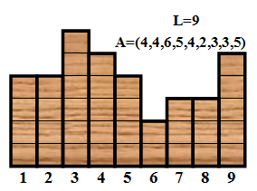
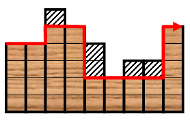

King从小就酷爱艺术，他梦想成为一名伟大的艺术家。最近他得到了一块材质不错的木板，木板下侧为直线段，长
为L，平均分为L段，从左到右编号为1，2，……，L。木板的上侧是锯齿形，高度为整数，第i段的高度为Ai，Ai>=
2。（如下所示）

这么好的一段材料浪费了怪可惜的，King决定好好加工一番做成一件艺术品。但他不是纯艺术家，他觉得每一件作
品都应该有实用价值（否则只是华而不实），具有实用性的艺术品是他设计的理念。根据这块木板的锯齿状，King
想到了每天起床后都要用到的一件日用品，"对，就把它做成梳子！"他的设想是：用刻刀将某些上端的格子挖掉（
如果把某个格子挖掉，那么这个格子上方的格子也必须被挖掉，但不能把一列中的格子全都挖掉），使得剩下木板
构成"规则锯齿形"（这样才好梳头）。

例如，对于上图，挖掉第3，7，8列最上面1个格子，第5列最上面2个格子后，剩下的区域就构成"规则锯齿形"（如
右图）。一个锯齿形称为"规则锯齿形"当且仅当它的上边界（图中红色曲线所示）的拐弯序列不包含"010"或者"10
1"。图中红色曲线的拐弯序列为："011001"，（其中0代表往左拐，1代表往右拐）沿着曲线的最左端往右走，先左
拐，再右拐，接着右拐，然后左拐，继续左拐，最后右拐。为了最大限度的减少浪费，King希望做出来的梳子面积
最大。这样一来，设计梳子的任务就变得非常复杂了--不过这是对于艺术家来说，对于你来说，不就是小菜一碟吗
？